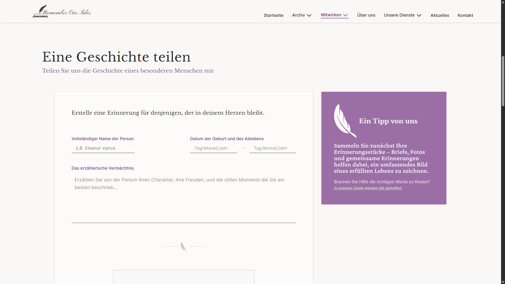
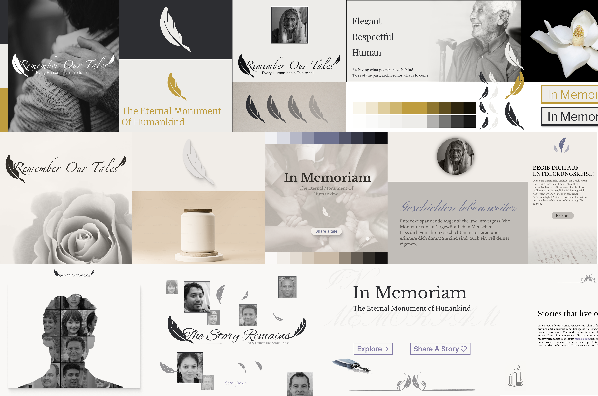
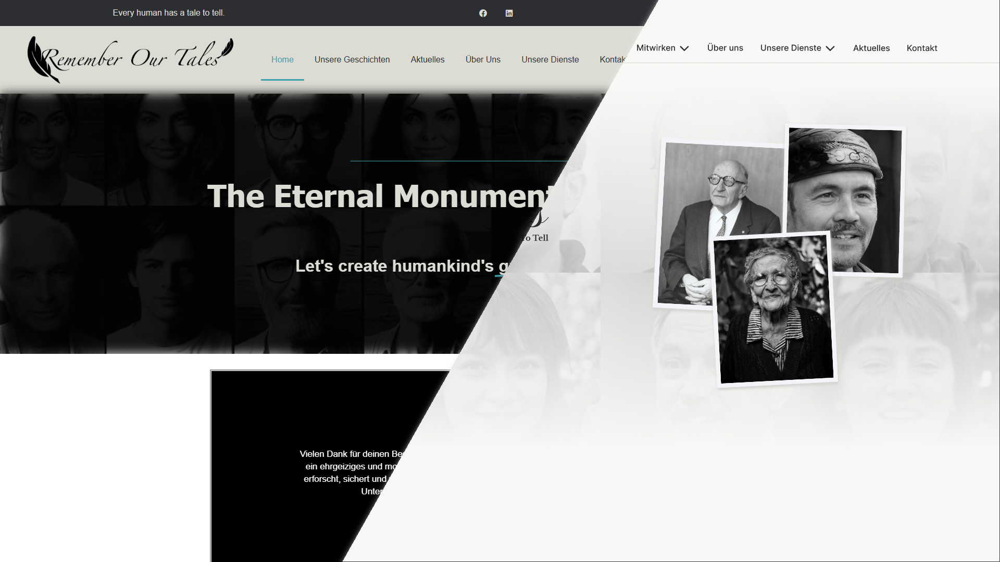
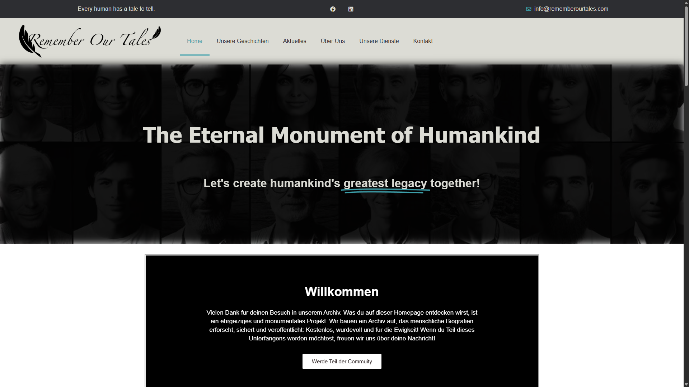
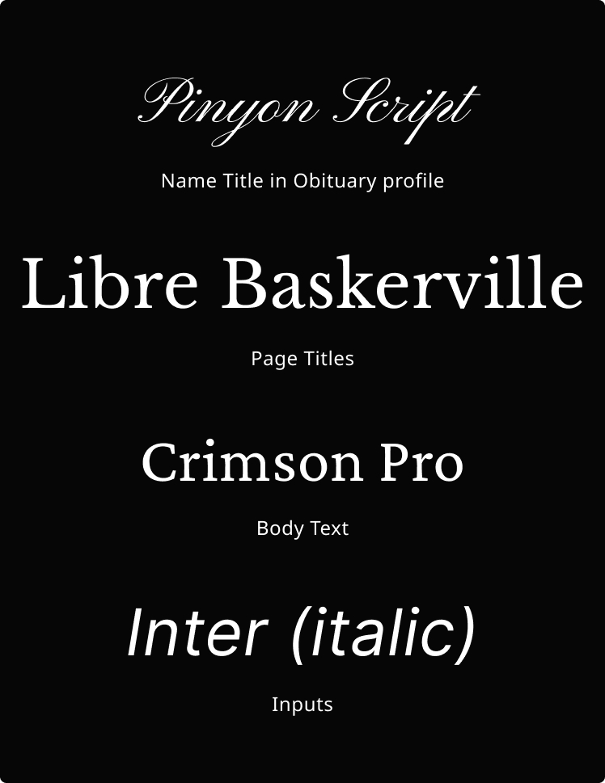
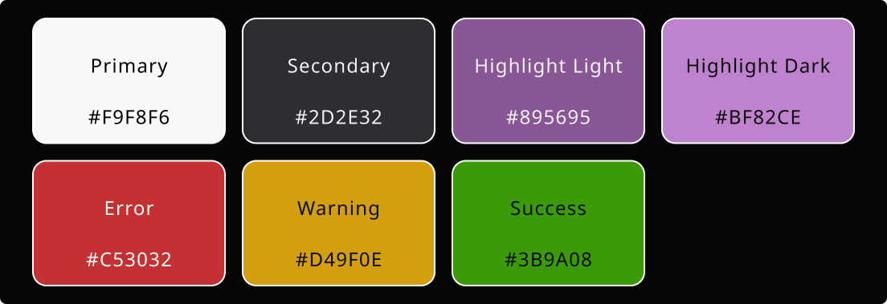
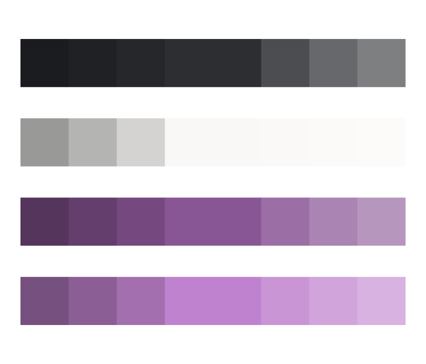
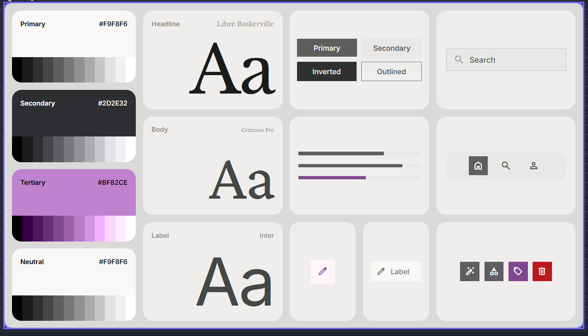
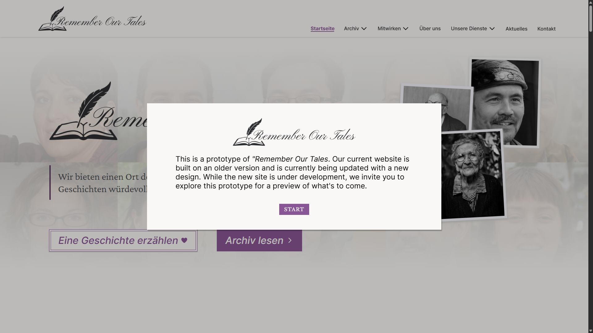
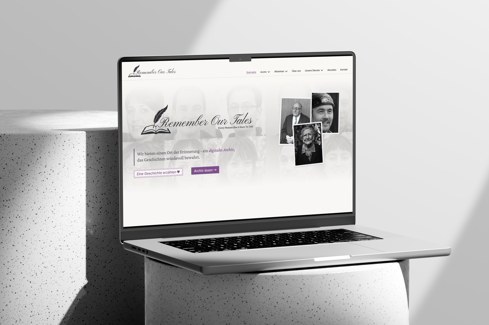

The Vision
We want to preserve human history by documenting every life, because everyone has a story worth telling. Too many lives fade into obscurity, even though their experiences, memories, and impact deserve to be remembered.
Archiving every human in history to keep them and keep their legacy alive. Preserving special stories, biographies and people everyone should have been heard about.
UI/UX Design, Lead Design, Research, Testing
Figma, Affinity, Google Stitch, HTML, CSS, JS
Ongoing (8+ months)
We want to preserve human history by documenting every life, because everyone has a story worth telling. Too many lives fade into obscurity, even though their experiences, memories, and impact deserve to be remembered.


The project “Remember Our Tales” is for the moment presented in a prototype, the Wordpress site is still in an older state, with the new design not implemented.
Our obituaries celebrate a person's entire life, highlighting their greatest achievements and defining moments through written stories, an interactive timeline, and a photo gallery featuring images provided by their family or loved ones.
To ensure every story is authentic, we work closely with our customers, who provide the information and materials needed to bring each life to life.
Anyone with a story to share can help preserve the legacy of someone they loved. As we work with the memories and personal data of those who have passed, we treat every story and every piece of material with the utmost care and respect.


To design a platform centered around personal biographies, I researched obituaries and similar websites that showcase people's life stories. While some features felt inappropriate for a respectful memorial platform, others - such as "On This Day" and obituary comments - inspired ideas that could encourage meaningful engagement without compromising the project's purpose.
I began by analyzing the visual language of traditional obituaries, focusing on color palettes, typography, and decorative elements. The first concepts for Remember Our Tales were primarily black, white, and grey with subtle accent colors.
After learning from a colleague that lavender was historically associated with mourning, I incorporated the color into the evolving stylescapes, giving the project its distinctive visual identity.


With a background in web development, I understood the target audience and the challenges they face. That perspective helped me design a matching platform focused on making it easier to discover collaborators and projects. Although development of “Asozial” is currently on hold, I still believe in the concept. With the right execution, it has the potential to become a go-to platform for developers looking for projects, collaborators, or new career opportunities.

Although the website already contained some content when I joined the project, several pages were incomplete or entirely empty. Before expanding the site, I restructured existing page layouts, researched the missing content, and refined how we wanted to present the project.
Based on this foundation, I introduced new page sections, designed entirely new pages, and added features that strengthened the overall experience.
Working within the limitations of the current free WordPress plan was one of the project's main challenges. While designing the pages and design system, I had to balance creative ideas with what was technically feasible. To validate concepts early, I regularly switched between Figma and WordPress, testing designs directly in the CMS before refining them in Figma.
If the project evolves with a more flexible WordPress plan, I see opportunities to introduce richer interactions, animations, and even shader-based effects—bringing a more modern feel while staying true to the established visual identity.
Obituaries served as the primary inspiration for the visual design. My goal was to move beyond the initial black-and-white concept and create a more cohesive visual identity. Rather than using pure black and white, I introduced softer tones and reduced the number of accent colors to establish a clearer hierarchy. After exploring options such as gold and deep ink blue, lavender proved to be the perfect fit—not only visually, but also because of its historical association with mourning.
Typography followed the same philosophy of elegance and clarity. A refined serif typeface is paired with a clean sans-serif for interface elements, while a handwritten display font adds a personal touch to obituary name banners.




Using Google Stitch to generate initial page concepts significantly accelerated the design process. By providing a style guide and generating multiple layout variations for each page, I could quickly combine the strongest ideas into polished designs. This iterative workflow made building pages feel modular and highly efficient.
Since Stitch's built-in design system was limited, many generated components had to be refined to match the project's visual identity and design system. Although AI greatly increased the speed of exploration and layout creation, achieving a production-ready result still required careful editing and design decisions.
To create a realistic interactive prototype, I explored different approaches that would allow the design from Figma to be translated into a functional experience while still supporting fast iteration. Several AI-based tools, including Claude and Figma Make, were tested, but none provided a sufficiently efficient solution without significant investment.
FigmaToCode became the most practical approach without using a MCP. By converting copied Figma frames into HTML with inline CSS or Tailwind styling, it allowed me to quickly transform static designs into interactive prototypes that closely resembled the final product.


With an ongoing project like Remember Our Tales, the design and development process is never truly finished. The platform will continue to evolve as new features are added, user feedback is incorporated, and the project grows in scope and reach. And while the project is in an early stage the amount of traffic and users is already growing, which is a good sign for the future of the project.
Remember Our Tales is a collaborative project created by freelancers who contribute their time alongside their jobs, studies, families, and personal lives. While this makes the development process gradual, everyone involved continues to move the project forward and bring the vision closer to reality.
The project “Remember Our Tales” is for the moment presented in a prototype, the Wordpress site is still in an older state, with the new design not implemented.